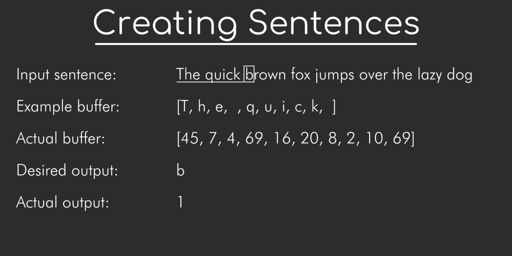

Ever since I started working on Marvin.js, it has been a goal to create an AI that was capable of generating human readable (and understandable) text. This is the result of that project. It took some time, but here it is! I am quite sure
there are better, faster, and easier methods, but this was the goal and it turned out better than I expected.
Why I made it
It has always fascinated me how computers would replicate human language. Years ago I thought they might just program the grammar of a language into the computer. But, as I was working on Marvin.js, I decided I wanted to know. So, I searched
on the internet and, eventually, found a way how it could be done.
How it works
The network trains by first converting all the characters from the input text to indeces from a character list, since the network can only accept a numerical input. Then, the network cycles through every character and it looks at a certain amount of characters before it. The (indeces of the) characters before the current character are the input for the Neural Network, while the desired output is the current character. The network then predicts what character should be next. The result is compared to the desired result and the network is altered accordingly. It then cycles to the next character and repeats the process. It does this until the entire input text has
been trained. It does this cycle thousands of times, which can take a long time. When network has cycled enough times, the network is able to recreate the input text. And, if the input text was sufficiently large, it can generate unique sentences that weren't in the original file. Also, it learns our grammar: capital letters, periods, commas, etc.

An example on how the network gets its input and output for training. Here, it trained the word 'brown'.
Can I try it?
The software is still in development. Though, there already is an early version that is capable of learning to generate text. You can visit the GitHub repository and it's listed under "examples".